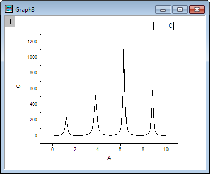
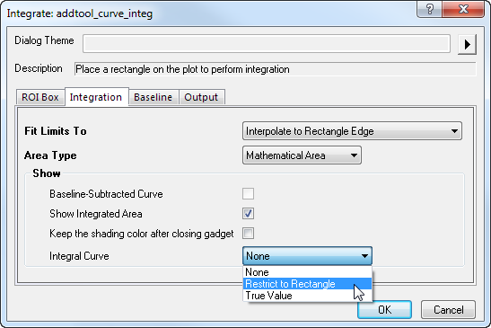
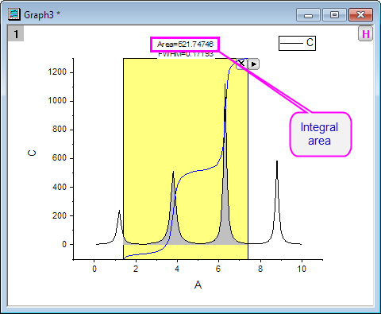
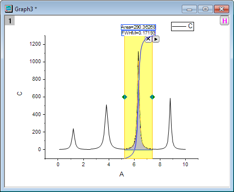
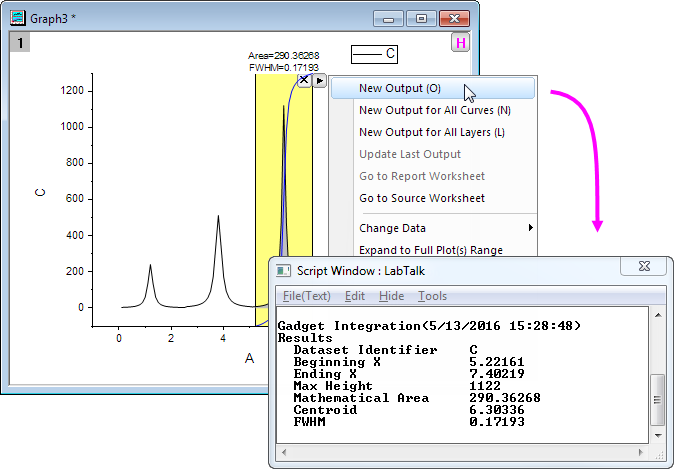
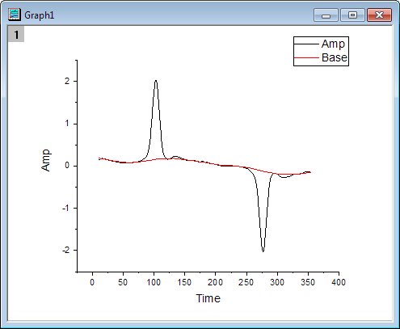
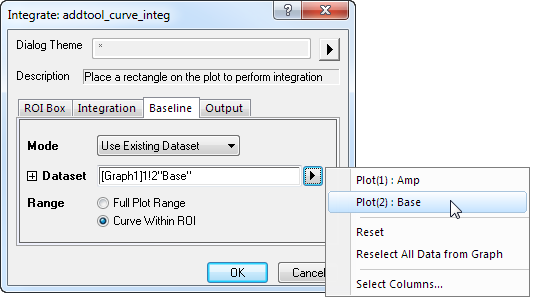
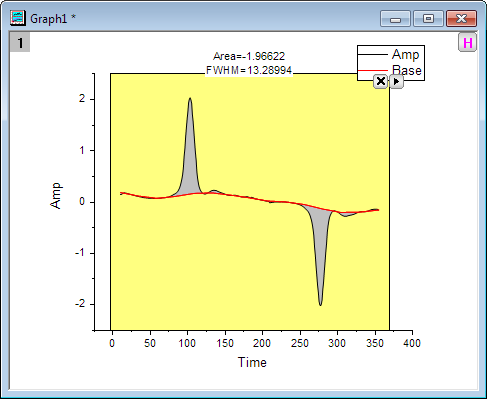

Minitool Integration
Integrate-Gadget
Zusammenfassung
Das Minitool Integration führt die numerische Integration einer Datenzeichnung durch, um die Fläche unter der Kurve zu berechnen. Sie können einen beliebigen Bereich der Datenzeichnung mit Hilfe der grafischen Datenauswahl (ROI) auswählen, die als rechteckiges oder kreisförmiges Objekt im Diagramm angezeigt wird.
Was Sie lernen werden
- Eine Datenzeichnung auf einfache Weise in einen rechteckigen Bereich integrieren
- Integrationsgrenzen und die Basislinie festlegen
- Eine Integralkurve innerhalb der grafischen Datenauswahl (ROI) anzeigen
- Mengen berechnen, einschließlich: Peakbereich, Peakhöhe, Peakzentrum und Halbwertsbreite (FWHM)
Mengen integrieren und ausgeben
- Öffnen Sie eine neue Arbeitsmappe und importieren Sie die Origin-Beispieldaten der Datei Multiple Peaks.dat, die sich im <Origin-Programmverzeichnis>\Samples\Curve fitting befindet.
- Markieren Sie Col(C) und wählen Sie Zeichnen: Linie: Liniendiagramm im Origin-Menü zum Zeichnen eines Diagramms.

- Wählen Sie bei aktivem Diagramm Minitools: Integration im Origin-Menü, um den Dialog Integrate: addtool_curve_integ aufzurufen.
Wählen Sie auf der Registerkarte Integration die Option Auf Rechteck beschränken in der Auswahlliste Integralkurve, um die Integralkurve innerhalb des Rechtecks zu zeichnen.

- Klicken Sie auf OK. Sie sehen, dass ein gelbes Rechteck und eine blaue Integralkurve zu dem Diagramm hinzugefügt werden. Die Integralfläche ist grau ausgefüllt. Der Wert wird oberhalb des Rechtecks angegeben.

- Verschieben Sie die gelbe grafische Datenauswahl, um den Bereich für den einzelnen Peak, den Sie integrieren möchten, festzulegen.

- Klicken Sie auf die dreieckige Schaltfläche
 in der oberen rechten Ecke der grafischen Datenauswahl, um das Ausklappmenü zu öffnen und Neue Ausgabe zu wählen. Die Ergebnisse des Minitools Integration werden dann im Skriptfenster angezeigt.
in der oberen rechten Ecke der grafischen Datenauswahl, um das Ausklappmenü zu öffnen und Neue Ausgabe zu wählen. Die Ergebnisse des Minitools Integration werden dann im Skriptfenster angezeigt.

Mit der Basislinie einer Datenzeichnung integrieren
- Öffnen Sie eine neue Arbeitsmappe und importieren Sie die Datei <Origin-Programmverzeichnis>\Samples\Spectroscopy\ Peaks with Base.dat.
- Markieren Sie Col(B) und Col(C) und wählen Sie Zeichnen: Linie: Liniendiagramm im Origin-Menü zum Zeichnen eines Diagramms.

- Wählen Sie bei aktivem Diagramm Minitools: Integration im Origin-Menü, um den Dialog Integrate: addtool_curve_integ aufzurufen.
- Wählen Sie auf der Registerkarte Basislinie die Option Verwende bestehenden Datensatz für den Modalwert. Wählen Sie dann Plot(2): Base als Datensatz und klicken Sie auf OK.

- Klicken Sie auf die dreieckige Schaltfläche und wählen Sie Auf gesamten Diagrammbereich erweitern im Ausklappmenü, um die Gesamtfläche für die Kurve zu integrieren.
